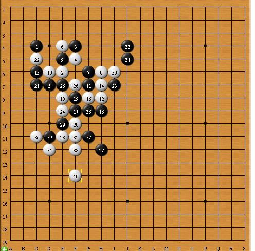

【暑假杯】错失良机 可气可叹
#1 【暑假杯】错失良机 可气可叹 作者：蓝天蓝 发表时间：2014-6-6 21:12:05
2013年暑假杯家族争霸赛2台选手对局晴空棋评
第8轮【红细胞】xiangzl (假先) VS 【讲五堂】jwt2(黑胜)
http://game.freewzq.com/offlineDisplayGame.html?html=6866170&id=2336
错失良机 可气可叹
时间：2013年9月14日 地点：新慢棋网
棋局总谱
1：【出人意料】出人意料的黑3
实战图如下：
【红细胞】xiangzl先手下在C4（这个点比C3有一些优势）所以【讲五堂】jwt2选择交换。
白棋2手下在E6（听别人说过这个2手是相当出名的）。黑棋3手并没有贴着白2防守，而是选择F4这个点。（黑棋这个三手似乎不妥）见参考图一：
参考图一如下：
如图所示，如果白棋4手向下活二，黑棋挡夹角的话，接着白棋会用双活二,从图上看，这样白棋能形成连攻，进而取胜。
白棋4手F5活二。（这个4手细想起来还是不错的，这手棋的主要作用不在与2手的活二，而应该在于防住黑棋的这个跳三）。（见参考图二）。
参考图二如下：
如图所示，如果接下来黑棋挡住白棋的这个活二的话，白棋顺势双活二。往后发展就是图示的这个局面。从图上看此时黑白双方基本平衡。
2【争夺先手】双方争夺先手。
实战图如下：
黑棋5手挡住白棋的活二。白棋6手阻断黑棋的跳二，同时白棋形成双活二。黑棋7手堵住白棋的一个活二。这时候的白棋可能是出于担心黑棋通过7手做棋的缘故，而没有活三。（见参考图三）。
参考图三如下：
从图上来看，如果白棋8手活三的话，不但起不到大的作用，而且还会因为冒进而被黑棋连攻胜。黑棋9手挡住白棋的跳，同时自己形成一个活二。白棋10手堵住黑棋的这个活二。（见参考图四）。
参考图四如下；
如图所示，如果白棋10手不堵住黑棋的这个活二的话，黑棋这个活二冲下来与黑棋5手又形成活三，到时候局面将会很难控制。
3：【争夺外势】双方争夺外势。
实战图如下：
黑棋11手活二做棋（如果白棋处理不当，黑棋就连攻胜了）见参考图五：
参考图五如下：
所以12手堵住其中的一条活三线路。（因为从上图看，黑棋要想连续活三胜，这3条线路缺一不可。）黑棋13手有2个作用(一来可以堵住白棋的左边的活二，但黑棋更想干的是寻求双活三.)（见参考图六）。
参考图六(1)如下：
参考图六（2）如下：
如果黑棋13手去堵白棋的这个跳活二的话，效果不一定好。（除非白棋像图2那样白棋28手挡下面）。
白棋14手又挡住黑棋企图用来双活三的一个活二，同时自己活三，取得先手。白棋16手双活二，黑棋17手堵住活二的同时黑棋活三。白棋18手阻断黑棋的活三同时白棋活三。
4：【争夺外势】 双方争夺外势。
实战图如下：
黑棋19手挡中间（遇到跳活三这种情况能挡中间就不要挡两边。因为挡两头的话，对手会利用冲四往外扩张。）同时黑棋形成一个活二。白棋20手下面挡住黑棋的这个活二（因为这个活二后面紧接着会有一个活三）。黑棋21手左边活三。黑棋23手挡住白棋12——20这个跳活二。（见参考图七）。
参考图七如下：
从图上来看，如果黑棋23手不挡的话，白棋就连攻胜了。
5【错失良机】白棋错失良机。
实战图如下
白棋24手E9(白棋这手棋有2个作用。一来可以挡住黑棋的跳活二，同时自己还有可能在E10连续冲四来扩张白棋的做棋空间。为了粉碎白棋的这个想法，黑棋25手下在E7的同时正好黑棋冲四。黑棋27手跳出激战正酣的这一个小区域，在外围挡住白棋的20——24的活二的同时 ，渴望在外围空旷地带做棋。黑棋此时比较好的进攻点是I11(见参考图八)
参考图八如下：
白棋28手E11做棋（见参考图九）。
参考图九如下：
如图所示，如果白棋28手黑棋不挡的话，白棋就连攻胜了。
黑棋29手挡住白棋的一个冲四点。白棋30手跳出这一小片区域在I6冲三。（见参考图十）。
参考图十如下：
如图所示，如果白棋30手向下冲四的话，是有机会胜的。
6;【再失良机】白棋再失良机。
实战图如下：
白棋30手在I6主要是想在棋盘右边开阔地带做棋。（见参考图十一）。
参考图十一如下：
如果任由白棋30手做棋的话，白棋就能连攻胜了。所以黑棋31手挡在J5.白棋看到右边也胜不了了，所以又重新返回到原来的那一小片区域。落于F11.(见参考图十二)。
参考图十二如下：

其实白棋30手就应该这样办。但是现在有点晚了（因为此时黑棋握有先手）。
33手黑棋竟然没有理会白棋的32手，继续在右边活二。这时候白棋只要沿着上图的思路走就可以胜了。但是白棋并没有理会这点，依旧跟着黑棋四处乱跑。35——36这两手棋意义不大。
7：【黑棋反击】黑棋开始反击。
实战图如下：
黑棋37手做棋（见参考图十三）
参考图十三如下：
白棋38手防在G9.(这个点也是白棋的冲四点)。白棋40手做棋的同时挡住黑棋的活二。(见参考图十四)。
参考图十四如下：
黑棋41手挡住白棋的活二的同时黑棋冲三。同时黑棋还暗藏一个冲四 和 一个活三。（见参考图十五）。
参考图十五如下：
任由这个41手变化而不管的话，白棋就输了。白棋42手挡下面。黑棋43手活二（意图很明显，就是要与41手配合，活三三。
8：【以守为攻】黑棋以守为攻。
实战图如下：
白棋44手活三（白棋以攻为守。破坏黑棋想三三的想法。）白棋46手挡住黑棋的冲四。（见参考图十六）
参考图十六如下：
]
黑棋连攻胜。
黑棋47手活三。（黑棋看到棋盘右边空间很小，所以向下活三来扩张空间。）白棋48手挡下面。49活三，50手白棋挡右边同时活三。黑棋51手档上面。
棋局到此，白棋投子认输（见参考图十七）。
参考图十七如下：;
［此帖子已被 蓝天蓝 在 2014-6-7 9:39:05 编辑过］
#2 Re:【暑假杯】错失良机 可气可叹 作者：第五象限 发表时间：2014-6-7 23:29:10
很详尽的样子